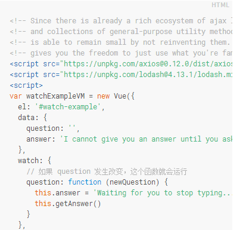

#文本
v-once:解除数据绑定
message-v-once:{{message}}message:{{message}}
#纯html
v-html绑定数据，且以html对其进行解析
#属性
v-bind:对dom属性进行绑定
这个div的id为{{domId}}
#使用javascript表达式
{{number+10086}}
注意返回的数据如果是字符串需加单引号:{{IsTrue?'返回true':'返回false'}}
{{message.split('').reverse().join('')}}
{{message.split('').reverse().join('').split('').reverse().join('')}}
#指令
v-if="boolean"
#参数
百度 点我#修饰符
#过滤器
{{ message| capitalize }}
过滤器可以串联： message | filterA | filterB
过滤器是 JavaScript 函数，因此可以接受参数：
message | filterA('arg1', arg2)
这里，字符串 'arg1' 将传给过滤器作为第二个参数， arg2 表达式的值将被求值然后传给过滤器作为第三个参数。
#缩写 就两个
v-bind:href="url"
:href="url"
:href="url"
v-on:click="doSomething"
@click="doSomething"
#计算属性（相当于属性的getter）
Original message: "{{ message }}"
Computed reversed message: "{{ reversedMessage }}"
但这种效果其实完全可以通过调用一个方法来实现：
// in component
methods: {
reversedMessage: function () {
return this.message.split('').reverse().join('')
}
}
所以差别在？
我们可以将同一函数定义为一个 method 而不是一个计算属性。对于最终的结果，两种方式确实是相同的。然而，不同的是计算属性是基于它们的依赖进行缓存的。计算属性只有在它的相关依赖发生改变时才会重新求值。这就意味着只要 message 还没有发生改变，多次访问 reversedMessage 计算属性会立即返回之前的计算结果，而不必再次执行函数。
这也同样意味着下面的计算属性将不再更新，因为 Date.now() 不是响应式依赖：
computed: {
now: function () {
return Date.now()
}
}
相比而言，只要发生重新渲染，method 调用总会执行该函数。joey:所以计算属性相当于是针对（依赖于）属性的getter方法，可以理解为缓存，属性值不变，对应的计算属性getter返回值不变且只计算第一次，大大节省开销。
我们为什么需要缓存？假设我们有一个性能开销比较大的的计算属性 A ，它需要遍历一个极大的数组和做大量的计算。然后我们可能有其他的计算属性依赖于 A 。如果没有缓存，我们将不可避免的多次执行 A 的 getter！如果你不希望有缓存，请用 method 替代。


